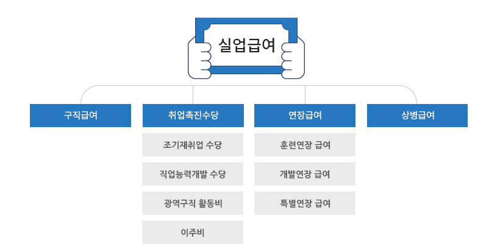

실업급여
- 지급조건
- 지급액
- 지급절차
실업급여란?
고용보험 가입 근로자가 실직하여 재취업 활동을 하는 기간에 소정의 급여를 지급함으로써 실업으로 인한 생계불안을
극복하고 생활의 안정을 도와주며
재취업의 기회를 지원해주는 제도로서 실업급여는 크게 구직급여와 취업촉진수당으로
나누어져 있습니다.
- 실업급여는 실업에 대한 위로금이나 고용보험료 납부의 대가로 지급되는 것이 아닙니다.
- 실업급여는 실업이라는 보험사고가 발생했을 때 취업하지 못한 기간에 대하여 적극적인 재취업활동을 한 사실을 확인(실업인정)하고 지급합니다.
- 실업급여 중 구직급여는 퇴직 다음날로부터 12개월이 경과 하면 소정급여일수가 남아있다고 하더라도 더 이상 지급받을 수 없습니다.
(실업급여 신청없이 재취업하면 지급받을 수 없으므로 퇴직 즉시 신청하시기 바랍니다.)

출처 : 고용보험 홈페이지